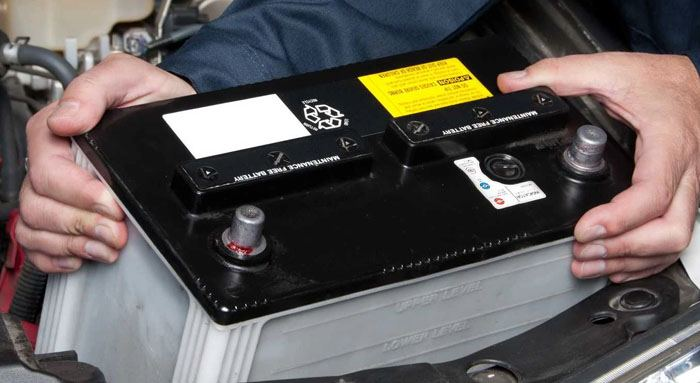
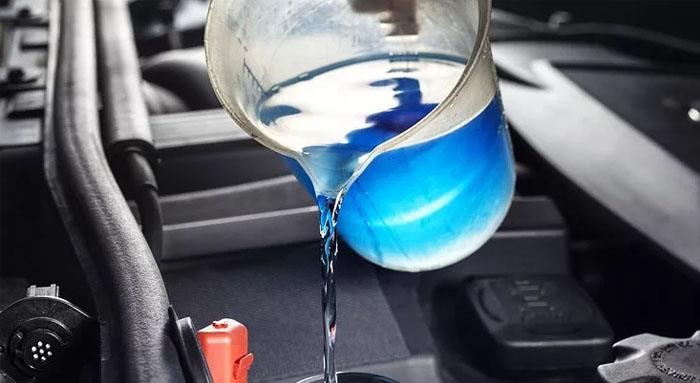
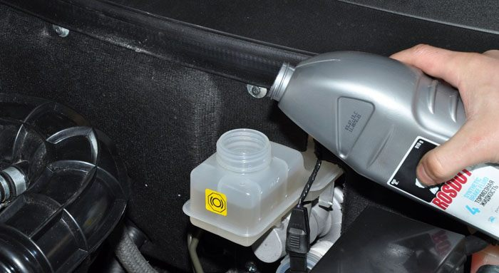
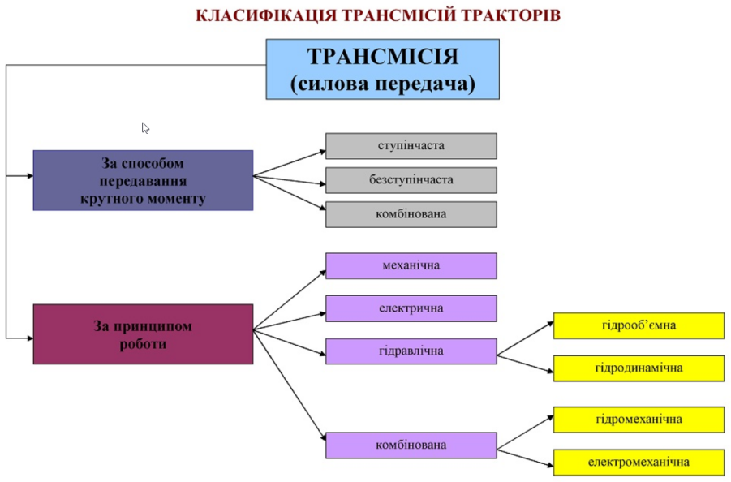

Що замінити в б/в автомобілі після покупки?
Купувати старий автомобіль завжди ризиковано. Зовнішній огляд дозволяє виявити тільки пошкодження корпусу, але ніяк не визначить ступінь зносу внутрішніх деталей і не покаже наскільки відпрацювали свій ресурс рідини.
В першу чергу необхідно провести комплексну діагностику автомобіля при першому ж техобслуговуванні. У цій статті ми детально розглянемо на що звертати увагу і які деталі потрібно замінити при покупці б/в автомобіля.
Візуально автомобіль може виглядати ідеально — фарба блищить, подряпин та іржі немає, але ось з нутрощами можуть бути проблеми, адже далеко не факт, що попередній власник свідомо проводив ТО вчасно і регулярно. А так як історію технічного обслуговування перевірити проблематично, рекомендується комплексно підійти до питання обслуговування. При першому ТО рекомендується провести ряд обов'язкових процедур, які дозволять довго і надійно використовувати новопридбаний автомобіль. Ось список технічних вузлів автомобіля, які необхідно продіагностувати і при необхідності замінити:
- Акумулятор і генератор (стан АКБ і можливість заряду);
- Електричне обладнання (блокування дверей, склопідйомники, двірники);
- Автосвітло (фари, аварійні вогні, стоп-сигнали і поворотники);
- Система запалювання (свічки запалювання, форсунки, клапани);
- Система гальмування (важелі, гальмівна рідина, гальмівні колодки і диски);
- Трансмісія (стан мастила, цілісність агрегату);
- Мотор і радіатор (фільтри, масла, антифриз та ін.);
- Підвіска і ходова (амортизатори, колеса, шиниСалон і кузов (лакофарбове покриття, оббивка салону, автомобільні чохли та ін.).
Давайте більш детально розглянемо всі ці процедури, з якими доводиться мати справу під час діагностики та відновлення автомобіля.
Заміна акумулятора
Більшість акумуляторних батарей можуть нормально працювати до 5 років. Але 5 років це скоріше максимальний термін служби АКБ, а не середній. Тому обов'язково спочатку потрібно перевірити дату виготовлення встановленого акумулятора і якщо з моменту виготовлення пройшло більше 3 років, варто задуматися про покупку нового.
Особливо актуальним стає питання заміни акумулятора перед зимовими заморозками, адже в холодну пору року стара акумуляторна батарея може в самий невідповідний момент підвести.
Вибрати і замінити АКБ досить просто. Головне звернути увагу на ємність, пусковий струм, габарити і розташування плюсової клеми. Бажано щоб ці параметри у нового акумулятора були такими ж як у старого. А купити акумулятор можна на 130.com.ua.
Заміна охолоджуючої рідини
Двигун при роботі сильно нагрівається і не можна допустити його перегріву. При відпрацюванні свого ресурсу, суміш антифризу і води перетворюється в електроліт, що може піддати корозії компоненти з металу.
Якщо мотор буде працювати з дуже високим навантаженням і відповідно сильно нагріватися, а елементи системи охолодження поржавіють, то можуть прогоріти прокладки ГБЦ, циліндричні блоки можуть деформуватися, а сальники будуть пропускати масло.
Згідно з регламентом, систему охолодження необхідно обслуговувати раз в 3 роки. Охолоджуюча рідина вкрай важлива для нормальної і тривалої експлуатації двигуна автомобіля. Перед заміною охолоджуючої рідини необхідно промити всю систему охолодження і утилізувати стару рідину. Для цього необхідне спеціальне обладнання і рекомендується цей процес довірити експертам. Після очищення системи охолодження, поки не залита нова рідина, слід перевірити всі шланги і замінити ті, які найсильніше зносилися.
Заміна гальмівної рідини
Гальмівні рідини є гігроскопічними, тобто можуть вбирати вологу, але при цьому вони згущуються і гірше протистоїть нагрівання і корозії. Гальмівну систему рекомендується обслуговувати раз в декілька років, але багато продавців б/в автомобілів можуть не проводити додаткове обслуговування перед продажем авто. Важливо замінити гальмівну рідину на свіжу, так як у старій рідини може бути знижена температура кипіння, а це в свою чергу може привести до перегріву супортів і загального зниження якості гальмування.
Заміна трансмісійної рідини
Трансмісійна рідина є перетворювачем потужності для обслуговування коробки передач, зчеплення і ведучих коліс. Чистота трансміссіонкі вкрай важлива в гідромеханічних трансмісіях. Міняти трансмісійну рідину слід якщо на її поверхні утворюється піна або є горілий запах. Це вказує на перегрів силового агрегату.
Першу заміну рідини слід робити після 10 000 км пробігу, такі зміни необхідно робити після кожних 50 000 км. У механічних коробках передач перша заміна відбувається також через 10 000 км, а наступні — через кожні 80 000 км. Для забезпечення оптимального терміну служби силового агрегату автомобіля рекомендується дотримуватися цих порад.
Трансмісія автомобіля
Трансмісія (силова передача):
- За способом передавання крутного моменту
- ступінчаста
- безступінчаста
- комбінована
- За принципом роботи
- механічна
- електрична
- гідравлічна
- гідрооб'ємна
- гідродинамічна
- комбінована
- гідромехагнічна
- електромеханічна